Pro Patterns: Basic Diagonals¶
Craig Cignarelli
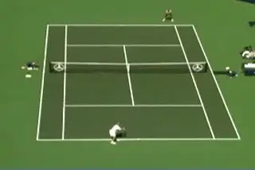
The bottom line: geometric patterns of ball movement are critical to advanced achievement.
When start to work with a new player, I like to ask a simple question. "How do you develop a point in order to win?" "What do you mean?" "I mean what are your patterns?" "What do you mean patterns? There are patterns of play?"
Many players, including some who have had success at fairly high levels, do not recognize that control of the patterns in match play is usually the deciding factor. This awareness (or lack of awareness) seems to be a fundamental difference between people who are playing tennis and quality tennis players. I believe that understanding the dimensions of the tennis court and the geometric patterns of ball movement are critical ingredients to advanced achievement in this game.
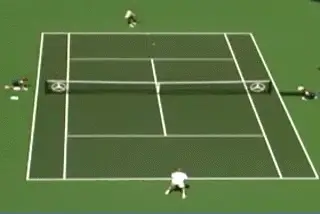
The bottom line: style versus style.
Style Versus Style
The bottom line of this game is simple. If we eliminate all of the emotional attachments and external distractions, it comes down to a style versus style match-up.
What type of game do I have versus what type of game does my opponent have? Then, what are my inherent strengths and what are my opponent's weaknesses? How can the strengths of my style prey upon the weaknesses of his style? It's that simple but few players break it down to what it really is. The style versus style match-up is the essence of the game.
In this series we are going to explore styles and patterns of baseline play. Rather than simply theorizing, we are going to look at actual pro points filmed in live tournament play, starting with backcourt points and in future articles, moving on to approach and serve and volley.
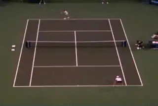
One theme: punish your opponent for trying to change the direction of the rally.
A Few Simple Themes
Basic baseline strategy can be reduced to a few simple themes:
1. Find the crosscourt rally that either favors your strength or attacks your opponent's weakness.
2. Use your favorable rally to create an angle, which opens the court for your winner.
3. Use the down the line shot to either attack, hit a winner, or change the crosscourt rally to your favor.
4. Create your rally and punish your opponent for trying to change direction.
5. Move a slow opponent using consistency and depth on all shots until you receive a short ball or floater to attack.
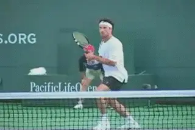
What crosscourt rally favors you?
Within this basic structure you can also move your opponent up and back or bring him into the net. But these tactics pretty much cover your options from the baseline.
Crosscourt
Virtually all coaches who study tactics agree that hitting crosscourt is the high percentage shot. The net is lower, the court is longer, your hips are not restricted by the shot, the shot does not require a risky change of ball direction, and your recovery distance is minimized.
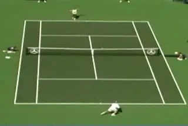
Mastery of the crosscourt means victory through intelligence not ego.
Mastery of the crosscourt rally wins thousands of matches due to intelligence over ego. Intelligence dictates the competitor play the high percentage shot, while offering the opponent the lower-percentage down the line play. Ego tempts the shotmaker to hit down the line to the shorter part of the court, and over a higher net, believing he can produce great shots often enough to win over the long term. Rarely is he successful.
In the modern pro game, there are three primary crosscourt rallies:
1. Forehand to forehand
2. Backhand to backhand
3. Inside out forehand to backhand
There is also a fourth possible crosscourt exchange: inside-out backhand to forehand that a few players (Daniela Hantuchova and Serena and Venus Williams) use effectively.
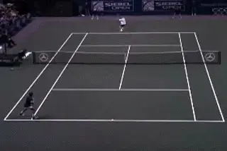
A deep crosscourt and a shorter angled crosscourt are actually 2 different shots.
When we talk about hitting crosscourt, however, we have to make a further distinction between hitting crosscourt deep, and hitting on shorter, sharper angles. These are actually different shots that play different roles in the way players construct their points.
In working with my players, I use this terminology in describing how to put patterns together:
1. "Cross": a basic deep crosscourt shot which crosses the baseline before it crosses the singles sideline.
2. "Angle": a ball struck on the outside, with spin, to create a shorter angle which drives an opponent outside the singles sidelines before it crosses the baseline.
3. "Line": a shot hit down the line.
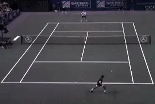
A favorite Agassi pattern: working the crosscourt then a down the line winner.
To understand a basic example of how pro players use these shots, let's pick one of Andre Agassi's favorite patterns. Agassi establishes the forehand-to-forehand rally and then uses the angled crosscourt to drive the opponent off the court, to open up the down the line winner.
The pattern is Forehand Cross, Forehand Angle, Forehand Line. Andre will usually attempt a winner on the last shot. If the opponent tries to change direction Andre exploits it by going crosscourt the other way, driving him outside the singles lines.
An attacking player with a competent volley, might use the same pattern, hitting an approach shot down the line instead of a groundstroke winner.
Find the Right Pattern
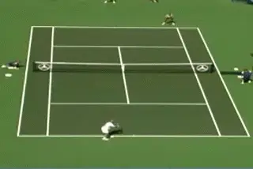
A basic winning strategy is shot tolerance. Establish a favorable crosscourt pattern and wait for your opponent's errors.
Once it is established that you are stronger off either the forehand or the backhand than your opponent, your strategy becomes simplified immediately. Play the diagonal that favors you!!
Versus lefties these patterns are reversed: your forehand to their backhand, your backhand to their forehand, or even your inside out forehand to their forehand. Still the concept is simple.
Players attempt to develop the high percentage crosscourt rally which favors their own stronger shot to their opponent's weaker shot. Once a player has established this crosscourt rally, he can then move into the construction phase of the point.
There are two basic ways the crosscourt rally can work to win you points in actual play. The simplest is based on the concept of "shot tolerance." Once you have established a favorable crosscourt baseline rally, you begin to look for an opponent's mistakes.
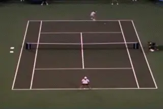
A favorable crosscourt rally yields the short ball for the down the line winner.
If you are more consistent than your opponent, then simply wait for him to miss. You know that by simple attrition, he will eventually make more mistakes than you.
A Means to and End
But winning the diagonal exchanges is rarely if ever just a war of attrition. The higher the level, the more the crosscourt advantage becomes the means to an end. Having the diagonal advantage gives you opportunities to create, and to gain responses which you can attack.
Here is where you begin another game based on a hunter mentality. Because your shots are superior to his in your favorable crosscourt rally, you will be able to move your opponent into a position where, eventually, his ball lands short or is hit close to the middle of the court. You can achieve this using depth, angles, short slices, height, pace, or sheer patience.
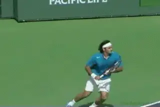
What all great players want--the short ball.
It is up to the player to find the type of shot, which causes his opponent to produce a short ball and once spotted, stay with the crosscourt rally until you can initiate that shot in every rally. Once accomplished, the reward is what all, great tennis players dream about---THE SHORT BALL.
The play is developed and finished in one or two shots. Either, the ball is so short that you can hit an outright winner, or you will strike an aggressive down the line approach and move in behind the ball to finish with an open court volley. This decision is most often made based on the height of the ball. If the ball is above the net, most pro players will go for a winner, and a ball below the net will necessitate an approach shot.
Approach shots most often go down the line so as to allow the net-rusher to assume the volley position more easily, and so the first volley can drive an opponent off the court with an angled volley beyond the singles line.
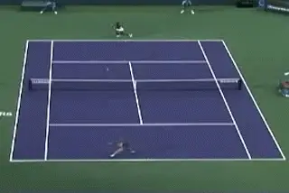
Venus creates space with the forehand crosscourt, attacks down the line and finishes with the volley.
These are first strike patterns and seek to initiate offense before your opponent can change the rally. There are several methods of creating the winning or attacking shot within these patterns. So let's now progress to your options.
Beginning with the forehand crosscourt diagonal, a player is looking to create space on the backhand side of the court. Thus, the player may strike the ball deep and follow it with an angle, and then attack the opposite side of the court.
Generally owning the ability to strike the forehand deep and wide enough to prevent an opponent from changing direction will lead you to this type of play. Playing the forehand pattern, it is important to note that you are trying to set up a finishing shot or attacking shot down the line.
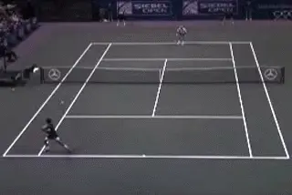
A favorable backhand crosscourt pattern will lead to winners down the line or inside in.
Backhand Crosscourt
From the backhand side we can see the same thing. Move the opponent deep and wide along the baseline in the backhand crosscourt diagonal until you can rip the backhand down the line winner, or get around the crosscourt and hit inside in. Players with one-handed backhands may also be susceptible to higher bouncing balls which take them out wide, as it is difficult to hit a deep slice off this ball. This may be another tactic used to set up the backhand down the line winner.
Inside Out
From the inside-out position, the concept is a bit more touchy. You will attempt to work the ball out wide with your inside-out forehand to the opponent's backhand, creating some angle to open up your opponent's forehand side. This is effective against a slow mover, a weak running forehand, a western grip forehand, or a player who cannot hit backhand angles.
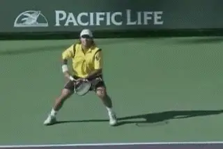
The inside out diagonal leads to inside in winners.
The inside-out pattern finishing shot is INSIDE-IN, (down the line) to the opponent's forehand. The player is looking for a ball closer to the middle of the court and above the net in order to finish. When the response comes back below the net, the player should hit inside-out again, or he will leave himself exposed for his opponent to drive it crosscourt. Hitting Inside-In should be a winner rather than an approach, unless it is a very short ball near the middle, which a player can get around and get tight to the net.
A player should know the favorable diagonal, the finishing shots, how the opponent is likely to change the patterns, how one can keep control of the patterns when the opponent attempts to switch them, and what to do once in the patterns, prior to walking on the court.
As always, these patterns are rules not laws, and often can be broken to prey upon an opponent's glaring weaknesses. For example, it is said that Agassi has trouble driving his running forehand crosscourt, and often hits to the middle of the court. A player playing him from the baseline, is not going to win many rallies from either crosscourt diagonal.
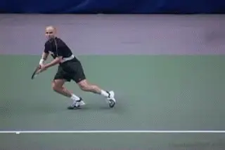
The running crosscourt: a small Agassi weakness.
To beat Andre from the back, you would attempt to drive deep down the middle into his backhand and make him hit down the line. Pulling him out wide to the backhand will make him respond with a better angle and playing him forehand to forehand is very dangerous because he cuts off the angles so well. Driving deep to Agassi's backhand can lead to the opportunity to hit hard forehand angles.
So, forcing him to hit from deep in the court, near the middle, down the line with his backhand, whereby you respond with a forehand hard angle, is the only way to get him moving, and to drive him off the court to his forehand side with any authority. It's a small vulnerability which may be why he is one of the most successful backcourt players in the history of the game.
Hitting Behind
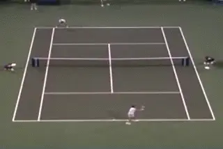
Another way of attacking is to hit behind your opponent.
Within these patterns, there are other ways of attacking. By driving deep to the corner over and over and moving your opponent within the confines of the crosscourt rally, you may elicit a shorter, weaker ball that is hit a bit closer to the sideline. From this position professional players often attempt the crosscourt winner, hitting behind the opponent. Players also attack by hitting behind when an opposing player attempts to switch the rally.
Monica Seles and Andre Agassi, two of the best on the rise players in history, hit these shots better than anyone. More importantly, they create these shots for themselves with their crosscourt baseline efficiency and control.
They take this ball very early, on the rise, with a good weight transfer and hammer it just beyond the service line with angle. It is a professional shot and takes tons of repetition to master, but one that is required in pro tennis. Even if it doesn't create a winner, the response will be a very short ball and the court will be wide open.
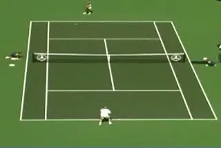
You can move a slower opponent and hit down the line earlier without fearing the crosscourt reply.
Movement
A player's ability to exploit the slower movement of an opponent, combined with is ability to counter the weaknesses in his own movement are two of the factors that define physical greatness on the court.
Against a slower player, this means moving your opponent around in a favorable crosscourt rally. It can also mean moving him from side to side. If the discrepancy in movement is significant, you can go down the line sooner or more frequently without worrying about being hurt by his crosscourt replies.
In moving him, you are looking to do two things. First to use your consistency and depth to create a floating return that you can attack.
Second you are looking to create an error from him. You want to break down his weaker side so he misses a rally ball, or hit angles that take him far out of position. You want to tempt him to try low percentage down the shots or to overhit from deep in the court. Or you might cause him to make errors off a soft slice.
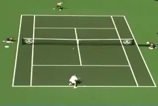
By going back down the line, Agassi forces his opponent to try to play offense from his weaker side.
Agassi is a master of exploiting slower players. Watch in the animation how he creates the crosscourt rally and waits for the opponent to change direction. Now, rather than drive the ball crosscourt to hurt his opponent, Andre waits for the opponent to move and hits back down the line. Although hitting down the line, Agassi is not changing direction from a crosscourt ball, but rather a ball coming straight at him, lessening the level of difficulty.
His goal here is to catch his opponent anticipating the crosscourt shot, slightly unbalanced on the split step, and to force the opponent to play offense crosscourt from his weaker side. This pattern is most effective when your opponent has a weakness in movement or court coverage.
Note: The above paragraph is a rule not a law. As all great players can tell you, there are many times when you will not recover completely and dare your opponent to hit to the open court.
The reasons for this are multifold. You may know that your opponent cannot hit a backhand down the line with consistency and you will play the inside out forehand position with more risk because of your opponent's weakness. You may have a great running forehand so you will expose your vulnerability and challenge your opponent to beat you there.
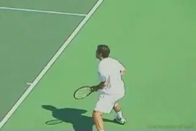
Sampras would expose his forehand and challenge players to beat him.
The basic, efficient recovery position is intelligent to understand, because it provides you with a means of controlling your effort of movement. But, use your strengths of speed and shot-making to modify your recovery position on the court as you progress to the higher levels of the game.
When You Are Out of Position
But the flip side of understanding how court movement affects your patterns is learning how to deal when you yourself are on the run and out of position. I like to ask students the following question:
Assume you hit a crosscourt forehand or backhand drive with your weight moving forward. It clears the net by about 2 feet and lands with good depth in your opponent's court. Now hit the same shot with your weight moving sideways or backwards.
Will this ball land shorter or deeper than the first ball? The obvious answer is shorter (although, surprisingly, the answer doesn't always seem obvious to my students). Less weight transfer into the ball means less power, and this means less depth.
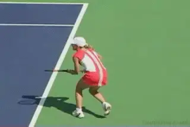
The right response when moving back is to add height.
So how do you counter when you are in this weaker, off-balance position? There are two choices: Either adjust the pace of the ball (hit it harder) or adjust the height (hit it higher).
Which will you choose? The right percentage play is to adjust the height of the ball. A player moving backwards or sideways will be less balanced. Less balance makes striking the ball with more power more difficult.
By hitting higher, you are also creating a better margin for error, which is wise for an off-balance player. Understanding this simple fact allows to adjust based on position.
Learning From Pro Tennis
The above patterns and situations are the very basics from which one can build a baseline game. As you begin to see the patterns in professional tennis, notice how the depth and width of shots influence directional changes.
Here are the things to watch in pro matches to learn more about crosscourt diagonals:
Which player is playing his stronger shot more often during the points? Which player is changing direction from the baseline without trying to hit a winner?
Which player is driving his opponent outside the singles sideline, using angles, more often? Can you see one pattern happening more often when one player is serving and a different pattern when the other player is serving?
These are the same questions you should ask about your opponent's game in your own matches. In the next article we'll look at how pro players battle to get control of the diagonals, impose their favorite patterns, and switch the patterns that favor their opponents.
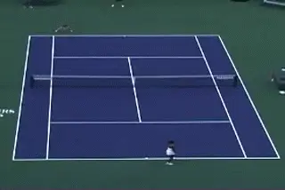
Which player is using angles and driving the opponent outside the singles lines?

Craig Cignarelli is one of the most prolific and successful developmental coaches in the country. His original analysis of professional tactics and movement is unique in modern coaching. Based at the renowned Riviera Country Club in Southern California, Craig has personally nurtured 4 junior players from the beginning of their careers who have gone on to achieve #1 national rankings. Currently he is working with a cadre of aspiring WTA and ATP players, as well as competitive juniors at all levels. Versed in 4 languages, Craig is completing his first book "What Champions Know," which forms the basis for his articles on Tennisplayer.